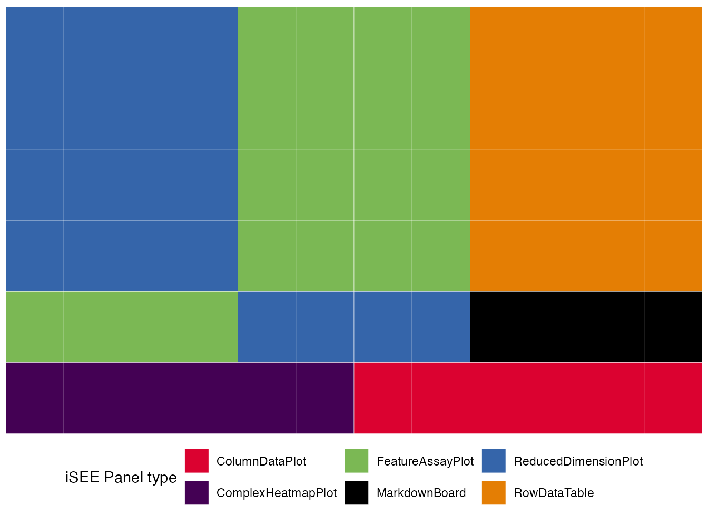

iSEEfier Workshop SCBC2024
Najla Abassi
Institute of Medical Biostatistics, Epidemiology and Informatics (IMBEI), Mainznajla.abassi@uni-mainz.de Some materials in this
workshop were adapted from resources created by the iSEE
core development team
14 November 2024
Source:vignettes/workshop_iSEEfier.Rmd
workshop_iSEEfier.RmdStreamlining Omics Data Visualization with iSEE and
iSEEfier
Introduction to iSEE
The iSEE package is a flexible, powerful and extendible application to explore and visualize any omics datas, including single cell and spatially resolved data.
Input data
iSEE was designed around the SummarizedExperiment class, a container widely used throughout the Bioconductor project. Briefly, the SummarizedExperiment class provides a container keeping matrices of assay data, sample metadata, and feature metadata.

In this workshop we will use a demonstration dataset of single cell
RNAseq from Tasic et al. (2016) “Adult mouse cortical cell taxonomy
revealed by single cell transcriptomics” doi:10.1038/nn.4216(Tasic et al. 2016).
The data is made available via the scRNAseq
Bioconductor package, and is stored in an object of class SingleCellExperiment,
which is a class that inherits from the
SummarizedExperiment class. It includes additional slots
and methods like metadata related to individual cells and their
associated dimensionality reductions.

We processed the data beforehand to save some time.
sce <- iSEEfierWorkshopSCBS2024::sce_allen
sce
#> class: SingleCellExperiment
#> dim: 20816 379
#> metadata(2): SuppInfo which_qc
#> assays(2): counts logcounts
#> rownames(20816): 0610007P14Rik 0610009B22Rik ... Zzef1 Zzz3
#> rowData names(0):
#> colnames(379): SRR2140028 SRR2140022 ... SRR2139341 SRR2139336
#> colData names(23): NREADS NALIGNED ... passes_qc_checks_s sizeFactor
#> reducedDimNames(3): PCA TSNE UMAP
#> mainExpName: endogenous
#> altExpNames(1): ERCCLooking at the object displayed above, we can tell that it contains:
- Two
assays. The first one calledcounts, and corresponds to a matrix measuring 20,816 genes in 379 cells. And The second assay islogcounts, which is the log transformed counts. - Twenty-three columns of cell metadata (
colData). - No gene metadata (
rowData), but only the basic information in therownames. - Three reduced dimensions :
PCA,TSNE, andUMAP.
Also of note:
- Gene symbols are in use for the row names.
- Arbitrary cell names are in use for column names (related to the SRA run information).
- Some object-level metadata is present.
- An alternative experiment called
ERCCis present (we will not use it) - this is related to the ERCC Spike-in mix.
The default iSEE app
Now we can launch an iSEE
instance and start exploring this dataset using the iSEE()
function without any further argument. This will produce an app using
the default configuration; that is, the app instance will include one
panel of each built-in class for which the relevant information is
available in the SingleCellExperiment object.
app <- iSEE::iSEE(sce)
shiny::runApp(app,launch.browser = TRUE)
The built-in panel types
ReducedDimensionPlot
The reduced dimension plot can display any reduced dimension
representation that is present in the reducedDim slot of
the SingleCellExperiment object.
Note that this slot is not defined for the base
SummarizedExperiment class, in which case the user
interface does not allow the inclusion of panels of this type.
shiny::runApp(app,launch.browser = TRUE)
ColumnDataPlot
The column data plot can display one or two of the provided column
annotations (from the colData slot). Depending on the class
of the selected annotations, the panel shows either a scatter plot, a
violin plot, or a Hinton diagram (Hinton and
Shallice 1991; Bremner, Gotts, and Denham 1994).
shiny::runApp(app,launch.browser = TRUE)
ComplexHeatmapPlot
The complex heatmap panel displays, for any assay, the observed values for a subset of the features across the samples.
shiny::runApp(app,launch.browser = TRUE)
FeatureAssayPlot
The feature assay plot displays the observed values for one feature across the samples. It is also possible to plot the observed values for two features, in a scatter plot.
shiny::runApp(app,launch.browser = TRUE)
SampleAssayPlot
Analogous to the Feature assay plot above, the Sample assay plot shows the observed values for all features, for one of the samples. It is also possible to plot the observed values for two samples, in a scatter plot.
shiny::runApp(app,launch.browser = TRUE)
RowDataTable
The row data table displays all information provided in the
rowData slot of the SummarizedExperiment
object, leveraging the interactivity provided by the DT package.
shiny::runApp(app,launch.browser = TRUE)
ColumnDataTable
Analogous to the Row data table above,
the column data table displays all information provided in the
colData slot of the SummarizedExperiment
object.
shiny::runApp(app,launch.browser = TRUE)
Collapsible boxes with display controls
Data parameters
Each plot panel type has a Data parameters collapsible
box. This box has different content for each panel type, but in all
cases it lets the user control the data that is displayed in the
plot.
shiny::runApp(app,launch.browser = TRUE)
Visual parameters
In contrast to the Data parameters collapsible box that
lets users control what is displayed in the plot, the
Visual parameters box lets users control how the
information is displayed.
This collapsible box contains the controls to change the size, shape, opacity, and color of the points, to facet the plot by any available categorical annotation, to subsample points for increased speed of plot rendering, and to control how legends are displayed.
shiny::runApp(app,launch.browser = TRUE)
Selection parameters
The Selection parameters collapsible box provides
controls to transfer selections of points (features or samples) between
panels.
We demonstrate examples of point transmission in the separate vignette of workshop recipes
shiny::runApp(app,launch.browser = TRUE)
Introduction to iSEEfier
Now we have seen how powerful of a tool iSEE can be. As
we previously learned, many tasks can be accomplished simply by running
the command:
iSEE(sce)However, customizing our visualization session can be cumbersome, as
it may require adding or removing different panels based on our needs.
This process often includes multiple steps, such as selecting a gene of
interest or coloring by a specific colData, and may even
involve writing multiple lines of code.
To make this process simpler, we can use the iSEEfier
package, which streamlines the setup (or if you will, firing up) of an
iSEE instance with just a small chunk of code, avoiding the
need to configure each iSEE panel individually.
In this section, we will illustrate a simple example of how to use iSEEfier. We will use the same allen data we worked with during this workshop.
iSEEinit
For example, we can be interested in visualizing the expression of Bcl6, Arf5, Cxcr5 and Grip1 genes all at once. We start by providing a couple of parameters:
## Define the list of genes
feature_list_1 <- c("Bcl6", "Arf5", "Cxcr5","Grip1")
## Define the cluster/cell type
cluster_1 <- "Primary.Type"It is also possible to load the feature list as a
data.frame, if our genes of interest already existed in a
table. Now we can pass these parameters into iSEEinit() to
create a customized initial configuration:
## Create an initial state with iSEEinit
initial_1 <- iSEEinit(sce,
features = feature_list_1,
clusters = cluster_1,
add_markdown_panel = TRUE)The rest can be as easy as passing this initial to the
iSEE() call:
shiny::runApp(app,launch.browser = TRUE)This is how it would look like:

While we are visualizing the expression of these genes, we might want
to take some notes (gene X is more expressed in a certain cell
type/cluster than some others, maybe we are trying to annotate the cells
ourselves if the annotation wasn’t available…).
For this, we used the argument add_markdown_panel = TRUE.
It will display a MarkdownBoard panel where we can note our
observations without leaving the app.
iSEEmarker
In many cases, we are interested in determining the identity of our
cell clusters, or further subset our cells types. That’s where
iSEEmarker() comes in handy. Similar to
iSEEinit(), we need a couple of parameters to be set:
## Define the cluster/cell type
cluster_1 <- "Primary.Type"
## Define the groups/conditions
group_1 <- "driver_1_s"
initial_2 <- iSEEmarker(
sce = sce,
clusters = cluster_1,
groups = group_1,
selection_plot_format = "ColumnDataPlot")This function returns a list of panels, with the goal of visualizing
the expression of marker genes selected from the
DynamicMarkerTable in each cell cell type. Unlike
iSEEinit(), which requires us to specify a list of genes,
iSEEmarker() utilizes the DynamicMarkerTable,
a custom panel in iSEE, that performs statistical testing
through the findMarkers() function from the scran
package. To start exploring the marker genes of each cell type with
iSEE, we run as usual:
shiny::runApp(app,launch.browser = TRUE)This is how it would look like:

iSEEnrich
At times, it can be useful to explore particular sets of features and
their associated genes. This is where iSEEnrich proves to
be especially valuable. We will first set up the necessary
arguments:
## Set which terms to use
GO_collection <- "GO"
## Set the organism via the orgDb package name
Mm_organism <- "org.Mm.eg.db"
## Set the gene identifier type
gene_id <- "SYMBOL"
## Define the cluster info
cluster_1 <- "Primary.Type"
## Define the group info
group_1 <- "driver_1_s"
## Define the plot type for the reduced dimension
reddim_type <- "TSNE"Now let’s create this initial setup for iSEE using
iSEEnrich()
results <- iSEEnrich(
sce = sce,
collection = GO_collection,
gene_identifier = gene_id,
organism = Mm_organism,
clusters = cluster_1,
reddim_type = reddim_type,
groups = group_1
)
#> iSEEnrich will specifically return a list with the
updated sce object and its associated initial
configuration. To start the iSEE instance we run:
shiny::runApp(app,launch.browser = TRUE)This is how it would look like:

view_initial_*
We can check the initial’s content, or how the included panels are
linked between each other without running the app with
view_initial_tiles() and
view_initial_network():
## Display a graphical representation of the initial configuration, where the panels are identified by their corresponding colors
view_initial_tiles(initial = initial_1)
## Display a network visualization for the panels
view_initial_network(initial_1, plot_format = "igraph")#> IGRAPH 3dbf241 DN-- 17 5 --
#> + attr: name (v/c), color (v/c)
#> + edges from 3dbf241 (vertex names):
#> [1] ReducedDimensionPlot1->ColumnDataPlot1
#> [2] ReducedDimensionPlot2->ColumnDataPlot1
#> [3] ReducedDimensionPlot3->ColumnDataPlot1
#> [4] ReducedDimensionPlot4->ColumnDataPlot1
#> [5] ReducedDimensionPlot5->FeatureAssayPlot5Another alternative for network visualization would use the
interactive widget provided by visNetwork:
view_initial_network(initial_1, plot_format = "visNetwork")It is also possible to combine multiple initials into one:
merged_config <- glue_initials(initial_1, initial_2)
## Check out the content of merged_config
view_initial_tiles(initial = merged_config)?iSEEfier is always your friend whenever you need
further documentation on the package/a certain function and how to use
it.
Feel free to explore previous iSEE demos and
workshops, as well as the iSEEfier vignette,
for a deeper dive into using these tools. They’ll help you make the most
of them :)
If you look for a place to start and have a full one-day workshop,
please refer to https://isee.github.io/iUSEiSEE/.
Session info
sessionInfo()
#> R version 4.4.1 (2024-06-14)
#> Platform: aarch64-apple-darwin20
#> Running under: macOS Ventura 13.6
#>
#> Matrix products: default
#> BLAS: /Library/Frameworks/R.framework/Versions/4.4-arm64/Resources/lib/libRblas.0.dylib
#> LAPACK: /Library/Frameworks/R.framework/Versions/4.4-arm64/Resources/lib/libRlapack.dylib; LAPACK version 3.12.0
#>
#> locale:
#> [1] en_US.UTF-8/en_US.UTF-8/en_US.UTF-8/C/en_US.UTF-8/en_US.UTF-8
#>
#> time zone: Europe/Berlin
#> tzcode source: internal
#>
#> attached base packages:
#> [1] stats4 stats graphics grDevices utils datasets methods
#> [8] base
#>
#> other attached packages:
#> [1] iSEEfierWorkshopSCBS2024_1.0.0 iSEEfier_1.1.2
#> [3] iSEE_2.17.4 SingleCellExperiment_1.27.2
#> [5] SummarizedExperiment_1.35.1 Biobase_2.65.1
#> [7] GenomicRanges_1.57.1 GenomeInfoDb_1.41.1
#> [9] IRanges_2.39.2 S4Vectors_0.43.2
#> [11] BiocGenerics_0.51.1 MatrixGenerics_1.17.0
#> [13] matrixStats_1.4.1
#>
#> loaded via a namespace (and not attached):
#> [1] DBI_1.2.3 rlang_1.1.4 magrittr_2.0.3
#> [4] shinydashboard_0.7.2 clue_0.3-65 GetoptLong_1.0.5
#> [7] RSQLite_2.3.7 compiler_4.4.1 mgcv_1.9-1
#> [10] png_0.1-8 systemfonts_1.1.0 vctrs_0.6.5
#> [13] iSEEhex_1.7.0 pkgconfig_2.0.3 shape_1.4.6.1
#> [16] crayon_1.5.3 fastmap_1.2.0 XVector_0.45.0
#> [19] fontawesome_0.5.2 utf8_1.2.4 promises_1.3.0
#> [22] rmarkdown_2.28 UCSC.utils_1.1.0 shinyAce_0.4.2
#> [25] ragg_1.3.3 bit_4.5.0 xfun_0.47
#> [28] zlibbioc_1.51.1 cachem_1.1.0 jsonlite_1.8.9
#> [31] blob_1.2.4 listviewer_4.0.0 highr_0.11
#> [34] later_1.3.2 DelayedArray_0.31.11 parallel_4.4.1
#> [37] cluster_2.1.6 R6_2.5.1 bslib_0.8.0
#> [40] RColorBrewer_1.1-3 jquerylib_0.1.4 Rcpp_1.0.13
#> [43] iterators_1.0.14 knitr_1.48 org.Mm.eg.db_3.19.1
#> [46] BiocBaseUtils_1.7.3 httpuv_1.6.15 Matrix_1.7-0
#> [49] splines_4.4.1 igraph_2.0.3 tidyselect_1.2.1
#> [52] rstudioapi_0.16.0 abind_1.4-8 yaml_2.3.10
#> [55] iSEEu_1.17.0 doParallel_1.0.17 codetools_0.2-20
#> [58] miniUI_0.1.1.1 lattice_0.22-6 tibble_3.2.1
#> [61] withr_3.0.1 KEGGREST_1.45.1 shiny_1.9.1
#> [64] evaluate_1.0.0 desc_1.4.3 Biostrings_2.73.1
#> [67] circlize_0.4.16 pillar_1.9.0 BiocManager_1.30.25
#> [70] DT_0.33 foreach_1.5.2 shinyjs_2.1.0
#> [73] generics_0.1.3 ggplot2_3.5.1 munsell_0.5.1
#> [76] scales_1.3.0 BiocStyle_2.33.1 xtable_1.8-4
#> [79] glue_1.7.0 tools_4.4.1 hexbin_1.28.4
#> [82] colourpicker_1.3.0 visNetwork_2.1.2 fs_1.6.4
#> [85] grid_4.4.1 AnnotationDbi_1.67.0 colorspace_2.1-1
#> [88] nlme_3.1-166 GenomeInfoDbData_1.2.12 vipor_0.4.7
#> [91] cli_3.6.3 textshaping_0.4.0 fansi_1.0.6
#> [94] viridisLite_0.4.2 S4Arrays_1.5.7 ComplexHeatmap_2.21.0
#> [97] dplyr_1.1.4 gtable_0.3.5 rintrojs_0.3.4
#> [100] sass_0.4.9 digest_0.6.37 SparseArray_1.5.36
#> [103] ggrepel_0.9.6 farver_2.1.2 rjson_0.2.23
#> [106] htmlwidgets_1.6.4 memoise_2.0.1 htmltools_0.5.8.1
#> [109] pkgdown_2.1.1 lifecycle_1.0.4 httr_1.4.7
#> [112] shinyWidgets_0.8.7 GlobalOptions_0.1.2 mime_0.12
#> [115] bit64_4.5.2